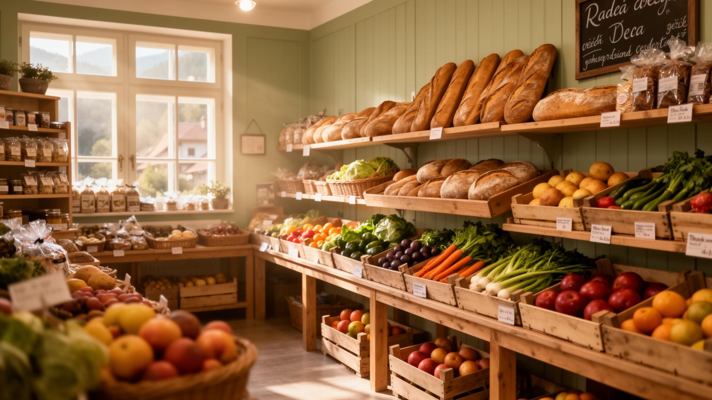

Adresa
Hejnice 557, Hejnice
Sortiment
- Čerstvé pečivo každé ráno – Rohlíky, chleba a koláče z místní pekárny.
- Lokální produkty – Med, mléko, sýry a marmelády od farmářů z Jizerských hor a Frýdlantska.
- Ovoce a zelenina – Sezónní výběr v dřevěných bednách.
- Lahůdky a sýry – Čerstvé krájené sýry, šunky a domácí saláty.
- Drogerie a denní potřeby – Vše na cestu nebo na chalupu.

Důvěřuje nám celé Hejnice
Sousedi, ne zákazníci. Měděnka stojí v Hejnicích už přes dvě desetiletí. Znají své stálé zákazníky jménem, znají jejich oblíbený chléb a staví na partnerství s místními farmáři a pekařem.
4.7★ • 38 hodnocení • 20+ let v Hejnicích • 12 lokálních dodavatelů
Reference
„Krásná malá prodejna v centru Hejnic. Vždycky čerstvé pečivo a milá obsluha — chodíme sem každé ráno na rohlíky."
„Mají skvělý výběr lokálních produktů, hlavně sýry a domácí marmelády. Konečně někdo, kdo podporuje místní farmáře."
„Příjemná atmosféra, ceny rozumné, vychytaná otevírací doba i o víkendu. Doporučuji všem turistům i místním."
„Když jedeme do Jizerek na chalupu, vždycky zastavíme tady. Mají všechno potřebné a obsluha si na vás udělá čas."
„Paní za pultem zná každého zákazníka jménem. Tohle je přesně to, co malému městu chybí — opravdové sousedství."
„Široký sortiment na tak malý obchod. Cením si i toho, že drží lokální značky, ne jen řetězcové brandy."
Stavte se na rohlík.
Najdete nás v centru Hejnic, hned u náměstí. Těšíme se na vaši návštěvu.